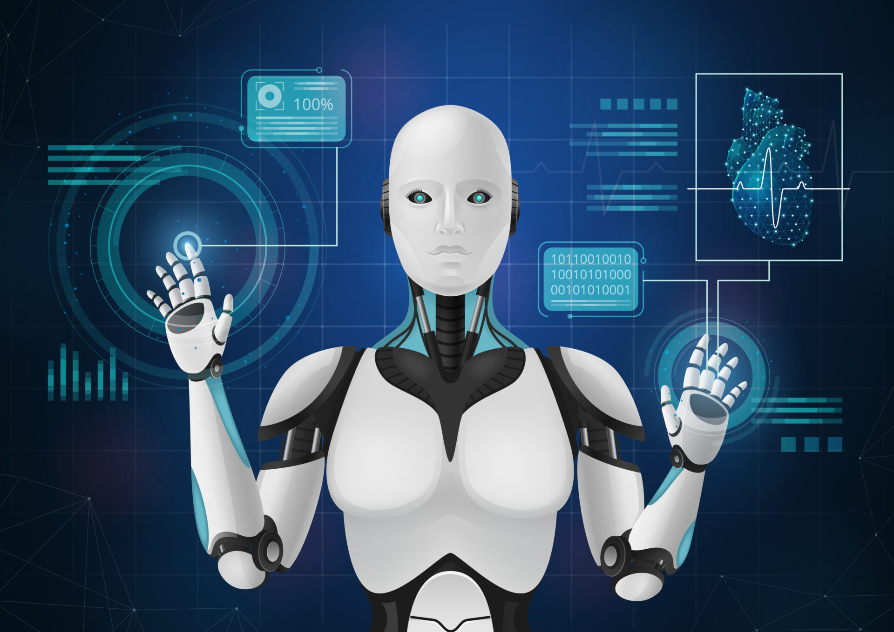

A Inteligência Artificial (IA) é uma tecnologia que permite a criação de sistemas capazes de realizar tarefas que imitam a inteligência humana, como aprendizado, tomada de decisões e análise de dados. Está presente em áreas como assistentes virtuais, diagnósticos médicos, veículos autônomos e agricultura. Com avanços como o aprendizado de máquina, a IA traz inúmeros benefícios, como aumento de eficiência e soluções inovadoras. No entanto, também levanta desafios éticos, como impacto no emprego e privacidade. Seu desenvolvimento requer uso responsável para garantir que contribua para uma sociedade mais justa e eficiente. A Inteligência Artificial (IA) transformará profundamente a sociedade, tornando-se mais autônoma e integrada ao cotidiano. No futuro, ela revolucionará áreas como saúde, com diagnósticos e tratamentos personalizados, e educação, com tutores virtuais adaptáveis. Cidades inteligentes e robôs explorando o espaço também se tornarão realidade. No trabalho, a IA atuará como parceira dos humanos, criando novas profissões. Apesar dos avanços, desafios éticos, como privacidade, desigualdade e decisões justas, precisarão ser enfrentados. Com uso responsável, a IA será uma ferramenta poderosa para resolver problemas globais e melhorar a qualidade de vida.
Origem e avanços: O termo “inteligência artificial” surgiu na década de 1950. Sistemas como Deep Blue derrotaram campeões mundiais no xadrez. Comunicação autônoma: IA demonstrou capacidade de se comunicar por meio de linguagens próprias, como os bots do Facebook. Aplicações diárias: IA está presente em recomendações de conteúdo, segurança e assistentes virtuais. Impacto na saúde: IA ajuda na detecção precoce de doenças e no desenvolvimento de medicamentos. Interação com emoções: Algumas IA reconhecem emoções humanas, mas sem ter sentimentos próprios. A IA continua a transformar diversos setores e a sociedade como um todo.
Neste video você vai se diverti com a Robô Sophia e Jimmy, brincando de pedra, tesoura, papel, ao estilo Robô, quando de forma inesperada a Robô Sophia diz que tem o plano perfeito para dominar a humanidade..: